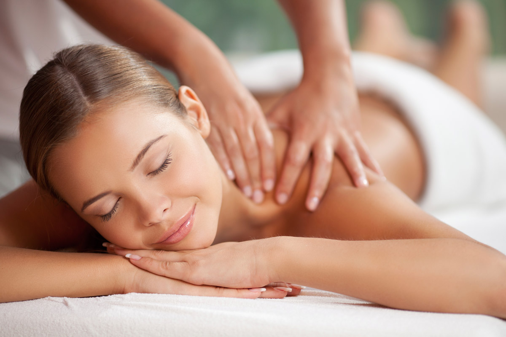
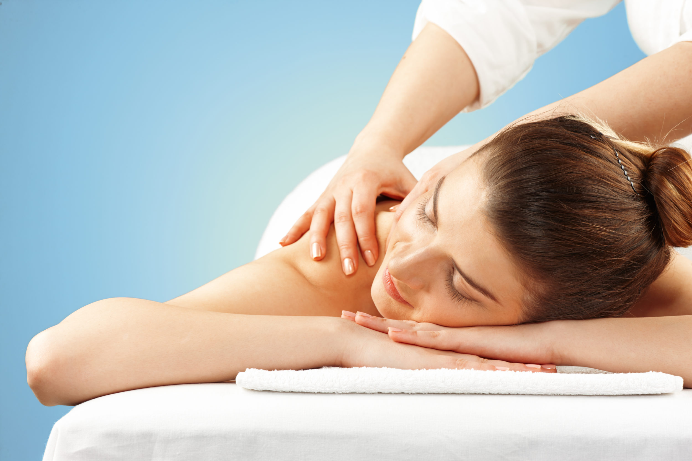
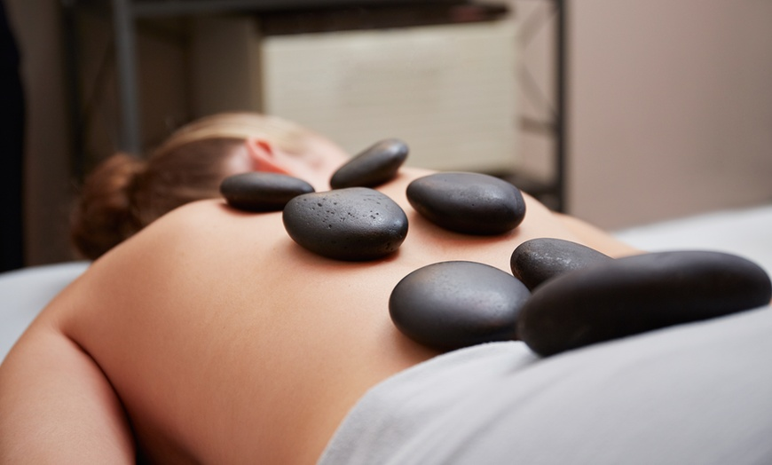
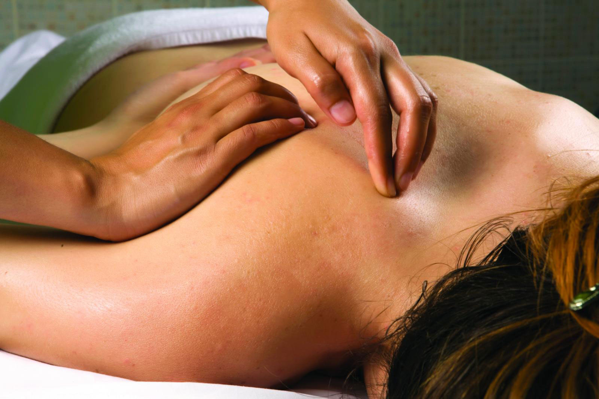

Massoterapia
A massoterapia é uma prática terapêutica que utiliza diversas técnicas de massagem para promover o relaxamento, aliviar tensões musculares e melhorar a circulação sanguínea. Na RRCorpus, oferecemos um ambiente tranquilo e profissionais qualificados para proporcionar uma experiência de bem-estar e renovação.
Tipos de Massoterapia que Oferecemos
Massagem Relaxante
Técnica que utiliza movimentos suaves e rítmicos para promover o relaxamento e reduzir o estresse
Massagem Terapêutica
Focada em áreas específicas de dor e tensão muscular, utilizando técnicas de pressão para aliviar desconfortos.
Massagem Desportiva
.webp)
Indicada para atletas, ajuda a prevenir lesões e melhorar a recuperação muscular após a atividade física.
Massagem com Pedras Quentes
Combina técnicas de massagem com o uso de pedras aquecidas para proporcionar relaxamento profundo e alívio da dor.
Massagem Shiatsu
Técnica oriental que utiliza pressão com os dedos em pontos específicos do corpo para equilibrar a energia e aliviar tensões.
Benefícios da Massoterapia
Alívio do Estresse
As técnicas de massagem ajudam a reduzir os níveis de cortisol, o hormônio do estresse, promovendo uma sensação de calma e bem-estar.
Relaxamento Muscular
A massagem alivia tensões e rigidez muscular, melhorando a flexibilidade e o movimento.
Melhora da Circulação
Os movimentos da massagem estimulam o fluxo sanguíneo, melhorando a oxigenação e a nutrição dos tecidos.
Redução da Dor
Técnicas específicas ajudam a aliviar dores crônicas e desconfortos musculares.
Fortalecimento do Sistema Imunológico
A massoterapia pode melhorar a função imunológica ao reduzir o estresse e promover um estado geral de saúde.
Como é uma Sessão de Massoterapia?
Uma sessão de massoterapia pode durar entre 60 a 90 minutos, dependendo da técnica escolhida e das necessidades do cliente. O terapeuta utilizará diferentes movimentos e pressões para trabalhar as áreas de tensão, promovendo relaxamento e alívio da dor. Antes de iniciar a sessão, o terapeuta discutirá com você suas preocupações e objetivos para personalizar o tratamento.
Indicações e Contraindicações
A massoterapia é indicada para pessoas que sofrem de tensões musculares, estresse, dores crônicas, entre outros desconfortos. No entanto, não é recomendada para pessoas com condições médicas graves, como trombose, fraturas recentes ou infecções de pele. É importante consultar um profissional de saúde antes de iniciar qualquer novo tratamento terapêutico
Agende sua sessão
Experimente os benefícios da massoterapia no RRCorpus. Nossa equipe de massoterapeutas está pronta para proporcionar uma experiência de bem-estar e relaxamento. Agende sua sessão agora mesmo e sinta a diferença.